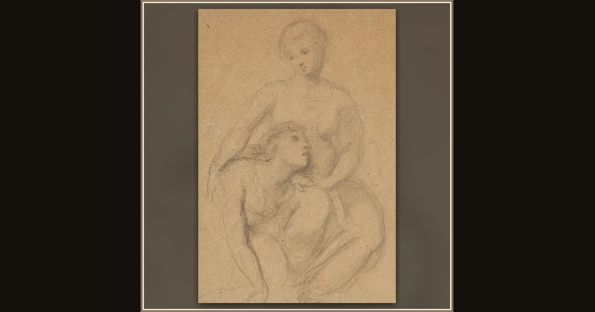

Antigone & Ismene
Alfred George Stevens · 1833–75 · met
A chalk study of the two sisters, one sinking against the other's knees, as the play opens with Antigone calling Ismene, true child of her own mother, to hear her news (1). Explore its place in Sophocles's Plays, Antigone, line 1.